1. 目标检测简介#

目标检测是对给定图像内感兴趣的对象进行检测的计算机视觉技术领域，如果人工智能模型确定图1-1左侧的图像是狗的，则该模型为图像分类模型；但如果人工智能模型将对象分类为狗的同时还检测对象的位置，如右图所示，则该模型为目标检测模型。
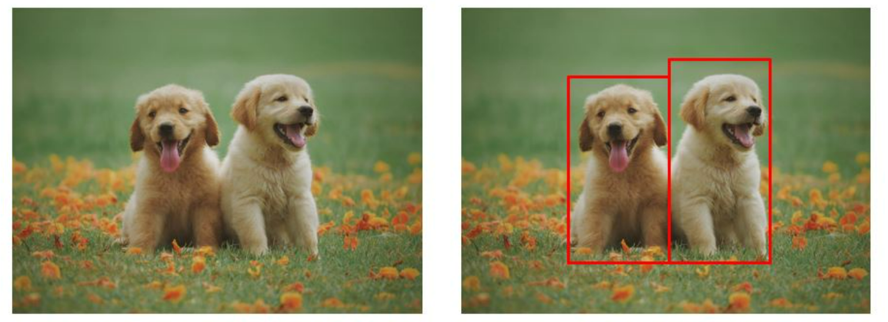
图 1-1 图像分类模型和目标检测模型的比较（来源：https://www.pexels.com/search/dog/）
目标检测模型可以用于许多领域。最具代表性的案例是在自动驾驶汽车中。为了创造一辆自动驾驶汽车，计算机必须能够自己识别周围的物体。例如，计算机应该识别交通信号；当有红灯时，车辆应该知道停下来。
对象检测技术也被用于安全领域的高效资源管理。一般情况下，闭路电视连续记录，因此需要大量内存。然而，结合对象检测技术，只有在检测到特定对象时才开始记录，内存才能得到有效利用。
在本章中，我们将构建一个检测蒙版的目标检测模型，我们构建的模型检测人脸在给定图像中的位置，并检查人脸是否被蒙版。
1.1. 边界框 Bounding Box#
在创建目标检测模型之前，第一步是创建一个边界框，由于目标检测模型使用的数据量是浩瀚的，因此可以通过一个边界框来正确检测对象，在深度学习过程中，只针对边界框区域，因此我们可以高效地进行训练。 包围盒是一种通过检测特定对象来帮助我们高效训练模型的方法，在目标检测模型中，包围盒用于指定目标位置，目标位置使用X和Y轴表示为矩形，包围盒值表示为（X min， Y min，X max，Y max）。

-图1-2指定为像素值的边界框区域（来源：https://github.com/sgrvinod/a-PyTorch-Tutorial-to-Object-Detection）
如图1-2所示，最小和最大X和Y值之间的区域被设置为边界框区域。然而，图1-2中的X和Y值是像素值，为了高效计算，应该转换成0到1之间的值。

-图1-3以百分位数指定的边界框面积（来源：https://github.com/sgrvinod/a-PyTorch-Tutorial-to-Object-Detection/raw/master/img/bc2.PNG）
{kind=link}
图1-3中的X和Y值是通过将边界框的原始像素X和Y值分别除以最大像素X值971和最大像素Y值547来计算的。例如，边界框最小X值640除以971得到0.66。这种归一化可以看作是一个高效计算的过程，但不是必不可少的。
根据数据集的不同，边界框值可能作为元数据被包括在内，如果没有元数据，可以通过单独的代码实现来指定边界框，本教程中使用的【面罩检测】（https://www.kaggle.com/andrewmvd/face-mask-detection）数据集提供了边界框，我们将在第二章中对边界框进行图解。
1.2. 模型类型 Model Type#
目标检测模型很大程度上可以分为一阶段和两阶段模型，我们来看看每种模型类型。
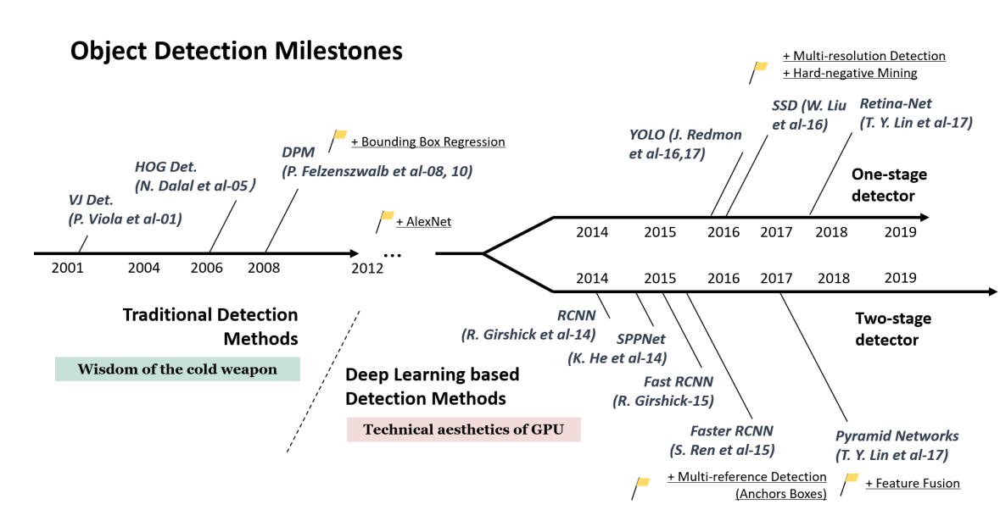
-图1-4目标检测算法时间表（来源：Zou et al.2019.20年目标检测：调查）
图1-4显示了目标检测模型的谱系，基于深度学习的对象检测模型出现在2012年，可以分为一阶段检测器和两阶段检测器，要理解这两类流，我们需要理解分类和区域提议的概念，分类是对一个对象进行分类，区域提议是一种算法，找到一个对象有可能在的区域。
两级检测器在目标检测精度方面表现良好，但由于其预测速度较慢而局限于实时检测，为了解决这一速度问题，创建了同时执行分类和区域命题的一级检测器，在下一节中，我们将考察一级和两级检测器的结构。
1.2.1. 一阶段检测 One-Stage Detector#
一阶段检测是一种通过同时进行分类和区域提议来获得结果的方法。将图像输入模型后，如图 1-5 所示，使用卷积层提取图像特征。
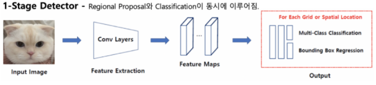
-图1-5一级探测器结构（来源：https://jdselectron.tistory.com/101）
1.2.2. 二阶段检测 Two-Stage Detector#
两阶段检测是一种通过依次执行分类和区域提议来获得结果的方法。如图 1-6 所示，我们可以看到区域提议和分类是依次执行的。
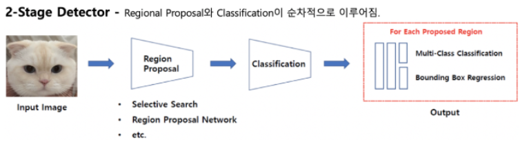
图1-6两级探测器结构（来源：https://jdselectron.tistory.com/101）
因此，一阶段检测相对较快但准确率较低，两阶段检测相对较慢但准确率较高。
1.3. 模型架构 Model Structure#
对于每一种一阶段和二阶段的检测器都有几种结构。R-CNN、Fast R-CNN 和 Faster R-CNN 是二阶段检测器，而 YOLO、SSD 和 RetinaNet 是一阶段检测器。让我们来看一下每个模型结构的特点。
1.3.1. R-CNN#
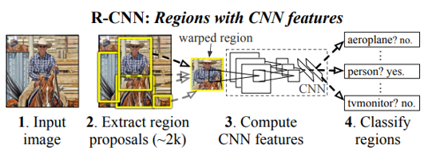
Figure 1-8 R-CNN structure (Source: Girshick et al. 2014. Rich feature gierarchies for accurate object detection and semantic segmentation)
R-CNN creates a region proposal for an image using Selective Search. Each created candidate region is wrapped in a fixed size by force and used as an input to the CNN. The feature map from the CNN is classified through SVM and the bounding-box is adjusted through Regressor. It has the disadvantage that it requires a large amount of storage space and is slow, since the image must be transformed or lost by wrapping and the CNN must be rotated as many times as the number of candidate regions.
1.3.2. Fast R-CNN#
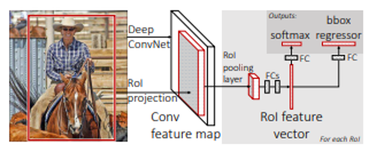
图1-9 Fast R-CNN结构（来源：Girshick。ICCV 2015。Fast R-CNN） 与R-CNN对每个候选区域应用一个CNN不同，在Fast R-CNN结构中，从对整个图像应用一个CNN生成的特征图中创建一个候选区域，生成的候选区域通过RoI池化提取为固定大小的特征向量，通过特征向量上的FC层后，通过Softmax进行分类，通过Regressor调整边界框。
1.3.3. Faster R-CNN#
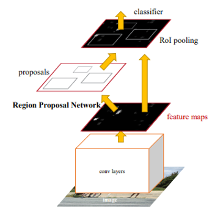 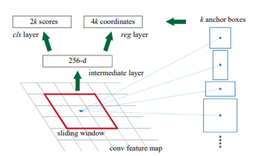
图1-10 Faster R-CNN结构（来源：Ren et al.2016. Faster R-CNN：使用区域提议网络进行实时目标检测）
更快的R-CNN使用区域建议网络（RPN），该网络使用深度学习代替选择性搜索步骤。RPN在计算特征图中的CNN时，在滑动窗口所取的每个点上预测带有锚框的候选区域。锚框是具有几个预设比率和大小的边界框。从RPN中获得的候选区域按照IoU的顺序排序，并通过非最大抑制（NMS）算法选择最终候选区域。为了固定所选候选区域的大小，执行RoI池化，然后该过程以与Fast R-CNN相同的方式进行。
1.3.4. YOLO#
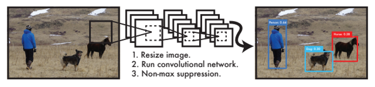
图1-11活在当下的结构（来源：Redmon et al.2016。你只看一次：统一的实时对象检测）
将边界框和类概率视为单个问题，活在当下的结构同时预测对象的类和位置。为了使用它，我们将图像分成一定大小的网格来预测每个网格的边界框。我们将使用边界框的置信度得分值和网格单元的类得分值来训练模型。这是一个非常快速和简单的过程，但对于小物体来说相对不准确。
1.3.5. SSD#
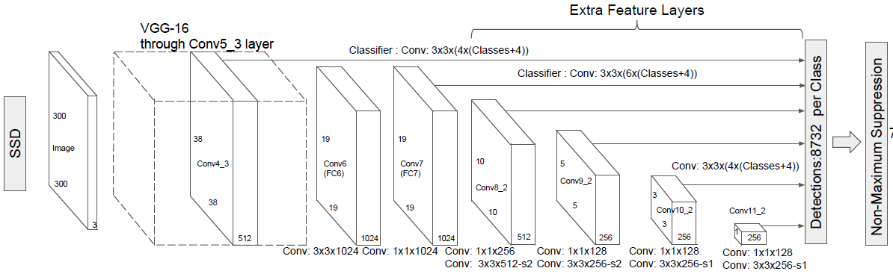
图1-12 SSD结构（来源：Liu et al.2016. SSD：SingShot MultiBox Detector）
SSD为每个卷积层之后出现的每个特征图计算边界框的类分数和偏移量（位置坐标）。最终的边界框是通过NMS算法确定的。这具有能够检测大小物体的优点，因为每个特征图都有不同的比例。
1.3.6. RetinaNet#
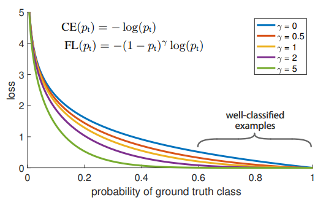
图1-13焦距损失（来源：Lin et al.2018.密集物体检测的焦距损失）
RetinaNet通过改变模型训练期间计算的损失函数来改进现有单级检测器的低性能。单级检测器通过在训练阶段建议多达100,000个候选者来训练自己。其中大多数被归类为背景类，只有10个或更少的候选者真正检测到感兴趣的对象。通过降低相对容易分类的背景候选者的损失值，增加了难以分类的真实对象的损失权重。因此，我们专注于对感兴趣的对象进行训练。RetinaNet速度快，性能类似于两级检测器。